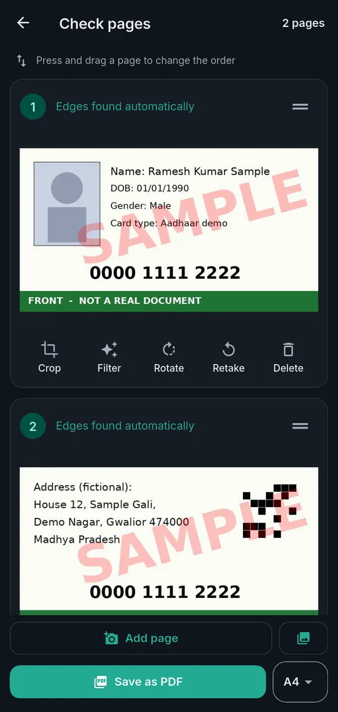

Smart scan with automatic edge detection
Hold your phone over a document and PatraScan finds the page, captures it and fixes the perspective — even when the photo is tilted. Multi-page scans become one tidy PDF in A4, Letter or fit-to-photo size.
Auto-capturePerspective fixCrop & rotateReorder pages

ID card mode
Front and back of a card on one page — exactly like a photocopy, ready to print or upload.
Masked Aadhaar
Hide the first 8 digits of your Aadhaar number in one tap, as UIDAI recommends — and see the result before you share.
Aadhaar QR & barcode reader
Read the Aadhaar Secure QR and any QR or barcode offline — from the camera, a photo or a saved document.
“Only for bank KYC” watermark
Stamp who a copy is for and the date across every page, so a photocopy can’t be reused somewhere else.
Compress to “under 200 KB”
Government and bank portals reject big files. Pick Light, Medium or Strong — or a target like under 500, 200, 100 or 50 KB — and PatraScan gets it there.
Target sizeMergeSplitPasswordJPGWord (DOCX)
Passport photos & form photos
Make a sheet of 35×45 mm passport photos for 4×6 or A4 printing, or resize a photo (200×230, 20–50 KB) and signature (140×60, 10–20 KB) for exam and government forms.
Text recognition (OCR)
Copy the text from any page — Hindi and English — read entirely on your phone.
Find anything
Search by name, type or the words inside a document — आधार, Aadhaar or even “Aadhar”.
Family folders & reminders
Keep Papa’s, Maa’s and Riya’s documents apart, and get a reminder before a passport or licence expires.
Preview before anything leaves
Signed, watermarked, marked-up or masked? A full-screen preview shows every page first. Nothing is shared or saved until you tap Share or Save.
Encrypted Google Drive sync & backup
Optional. Files are encrypted before upload into a hidden folder only PatraScan can see; a recovery key you keep restores them on a new phone. Or save a password-protected backup file.